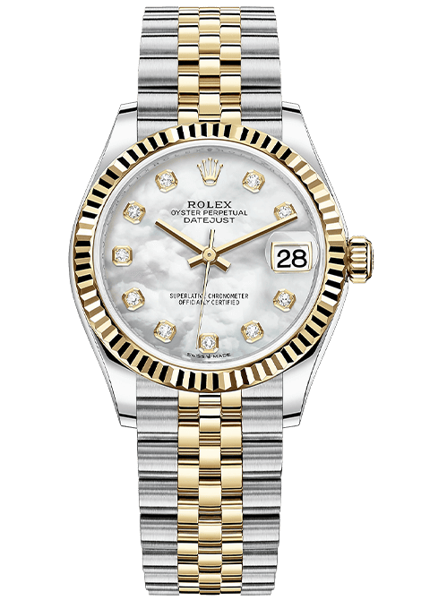
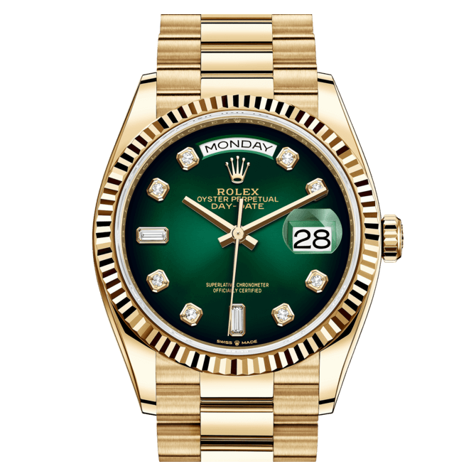

популярные
Модели

Truth22
Часы также оснащены прочным сапфировым стеклом и оснащены швейцарским механизмом SW200-1 с автоматическим заводом, который имеет запас хода.

Home74
Часы также оснащены прочным сапфировым стеклом и оснащены автоматическим заводом Sw12-1
Описание продукта
Вдохновленные траншейными часами времен Первой мировой войны, эти часы имеют современный дизайн с городским стилем и винтажной душой. Часы 22 Design Studio Concrete Sector по-новому интерпретируют старые часы с бетонным циферблатом. Циферблат ручной работы на Тайване отлит из цельного куска с использованием техники Бетон подробнее